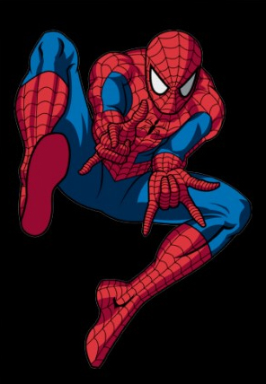
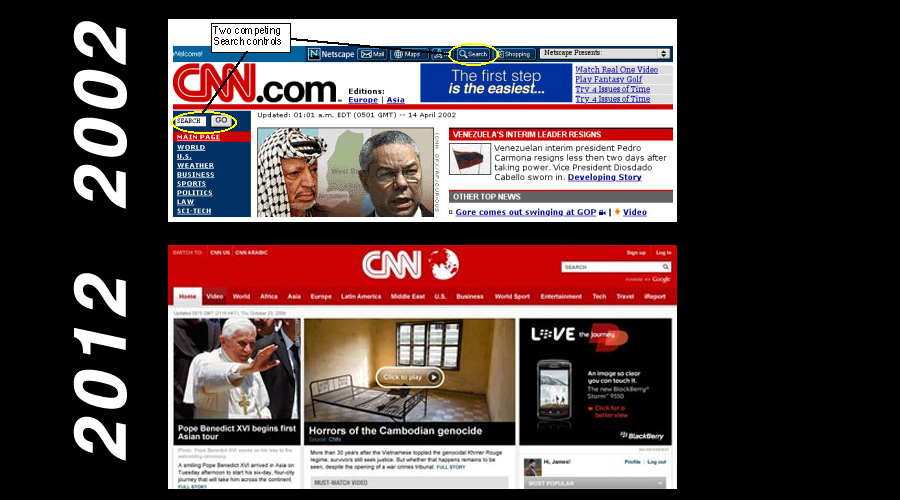

What was it like back then?
- Only 9.1% of the world population used the Internet (569 mil users)
- 95% of Internet used Internet Explorer as main web browser
- 3 million websites existed
The Top 10 Web Searches in 2002 were...
10. Warcraft 3
9. Morrowind
8. American Idol
7. Eminem
6. Star Wars
5. Avril Lavigne
4. World Cup
3. Winter Olympics
2. Shakira
1. Spiderman

CNN: Then and Now

More facts/comparisons
- 569 million internet users in 2002- People on average spent 46 minutes a day on the internet
- The page loading time approx. took 16 seconds
- It took about 12.5 minutes to download a single song from the internet
- Microsoft’s Internet Explorer had 95 percent market share.
- Less than 600 million people were online globally … fewer than Facebook users alone in 2012
- The big social networking story was Friendster with a whopping 3 million users